Neural Networks, Types, and Functional Programming
Posted on September 3, 2015
An Ad-Hoc Field
Deep learning, despite its remarkable successes, is a young field. While models called artificial neural networks have been studied for decades, much of that work seems only tenuously connected to modern results.
It’s often the case that young fields start in a very ad-hoc manner. Later, the mature field is understood very differently than it was understood by its early practitioners. For example, in taxonomy, people have grouped plants and animals for thousands of years, but the way we understood what we were doing changed a lot in light of evolution and molecular biology. In chemistry, we have explored chemical reactions for a long time, but what we understood ourselves to do changed a lot with the discovery of irreducible elements, and again later with models of the atom. Those are grandiose examples, but the history of science and mathematics has seen this pattern again and again, on many different scales.
It seems quite likely that deep learning is in this ad-hoc state.
At the moment, deep learning is held together by an extremely successful tool. This tool doesn’t seem fundamental; it’s something we’ve stumbled on, with seemingly arbitrary details that change regularly. As a field, we don’t yet have some unifying insight or shared understanding. In fact, the field has several competing narratives!
I think it is very likely that, reflecting back in 30 years, we will see deep learning very differently.
Deep Learning 30 Years in the Future
If we think we’ll probably see deep learning very differently in 30 years, that suggests an interesting question: how are we going to see it? Of course, no one can actually know how we’ll come to understand the field. But it is interesting to speculate.
At present, three narratives are competing to be the way we understand deep learning. There’s the neuroscience narrative, drawing analogies to biology. There’s the representations narrative, centered on transformations of data and the manifold hypothesis. Finally, there’s a probabilistic narrative, which interprets neural networks as finding latent variables. These narratives aren’t mutually exclusive, but they do present very different ways of thinking about deep learning.
This essay extends the representations narrative to a new answer: deep learning studies a connection between optimization and functional programming.
In this view, the representations narrative in deep learning corresponds to type theory in functional programming. It sees deep learning as the junction of two fields we already know to be incredibly rich. What we find, seems so beautiful to me, feels so natural, that the mathematician in me could believe it to be something fundamental about reality.
This is an extremely speculative idea. I am not arguing that it is true. I wish to argue only that it is plausible, that one could imagine deep learning evolving in this direction. To be clear: I am primarily making an aesthetic argument, rather than an argument of fact. I wish to show that this is a natural and elegant idea, encompassing what we presently call deep learning.
Optimization & Function Composition
The distinctive property of deep learning is that it studies deep neural networks – neural networks with many layers. Over the course of multiple layers, these models progressively bend data, warping it into a form where it is easy to solve the given task.
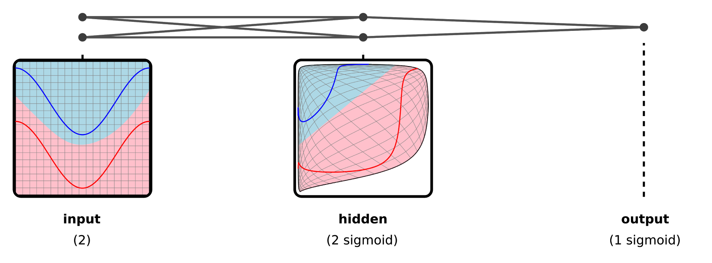
The details of these layers change every so often.1 What has remained constant is that there is a sequence of layers.
Each layer is a function, acting on the output of a previous layer. As a whole, the network is a chain of composed functions. This chain of composed functions is optimized to perform a task.
Every model in deep learning that I am aware of involves optimizing composed functions. I believe this is the heart of what we are studying.
Representations are Types
With every layer, neural networks transform data, molding it into a form that makes their task easier to do. We call these transformed versions of data “representations.”
Representations correspond to types.
At their crudest, types in computer science are a way of embedding some kind of data in \(n\) bits. Similarly, representations in deep learning are a way to embed a data manifold in \(n\) dimensions.
Just as two functions can only be composed together if their types agree, two layers can only be composed together when their representations agree. Data in the wrong representation is nonsensical to a neural network. Over the course of training, adjacent layers negotiate the representation they will communicate in; the performance of the network depends on data being in the representation the network expects.
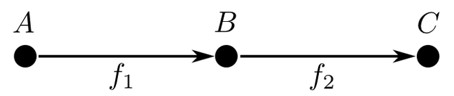
A layer \(f_1\) followed by a layer \(f_2\). The output representation of \(f_1\) is the input of \(f_2\).
In the case of very simple neural network architectures, where there’s just a linear sequence of layers, this isn’t very interesting. The representation of one layer’s output needs to match the representation of the next layer’s input – so what? It’s a trivial and boring requirement.
But many neural networks have more complicated architectures where this becomes a more interesting constraint. For a very simple example, let’s imagine a neural network with multiple similar kinds of inputs, which performs multiple, related tasks. Perhaps it takes in RGB images and also grayscale images. Maybe it’s looking at pictures of people, and trying to predict age and gender. Because the similarities between the kinds of inputs and between the kinds of tasks, it can be helpful to do all of this in one model, so that training data helps them all. The result is multiple input layers mapping into one representation, and multiple outputs mapping from the same representation.
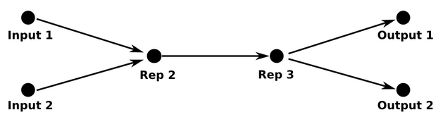
Perhaps this example seems a bit contrived, but mapping different kinds of data into the same representation can lead to some pretty remarkable things. For example, by mapping words from two languages into one representation, we can find corresponding words that we didn’t know were translations when we started. And by mapping images and words into the same representation, we can classify images of classes we’ve never seen!
Representations and types can be seen as the basic building blocks for deep learning and functional programming respectively. One of the major narratives of deep learning, the manifolds and representations narrative, is entirely centered on neural networks bending data into new representations. The known connection between geometry, logic, topology, and functional programming suggests that the connections between representations and types may be of fundamental significance.
Deep Learning & Functional Programming
One of the key insights behind modern neural networks is the idea that many copies of one neuron can be used in a neural network.
In programming, the abstraction of functions is essential. Instead of writing the same code dozens, hundreds, or even thousands of times, we can write it once and use it as we need it. Not only does this massively reduce the amount of code we need to write and maintain, speeding the development process, but it also reduces the risk of us introducing bugs, and makes the mistakes we do make easier to catch.
Using multiple copies of a neuron in different places is the neural network equivalent of using functions. Because there is less to learn, the model learns more quickly and learns a better model. This technique – the technical name for it is ‘weight tying’ – is essential to the phenomenal results we’ve recently seen from deep learning.
Of course, one can’t just arbitrarily put copies of neurons all over the place. For the model to work, you need to do it in a principled way, exploiting some structure in your data. In practice, there are a handful of patterns that are widely used, such as recurrent layers and convolutional layers.
These neural network patterns are just higher order functions – that is, functions which take functions as arguments. Things like that have been studied extensively in functional programming. In fact, many of these network patterns correspond to extremely common functions, like fold. The only unusual thing is that, instead of receiving normal functions as arguments, they receive chunks of neural network.2
-
Encoding Recurrent Neural Networks are just folds. They’re often used to allow a neural network to take a variable length list as input, for example taking a sentence as input.
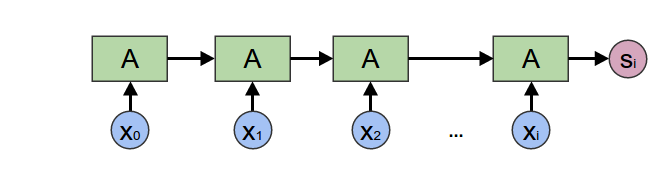fold = Encoding RNNHaskell: foldl a s -
Generating Recurrent Neural Networks are just unfolds. They’re often used to allow a neural network to produce a list of outputs, such as words in a sentence.
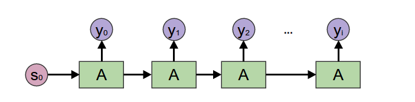unfold = Generating RNNHaskell: unfoldr a s -
General Recurrent Neural Networks are accumulating maps. They’re often used when we’re trying to make predictions in a sequence. For example, in voice recognition, we might wish to predict a phenome for every time step in an audio segment, based on past context.
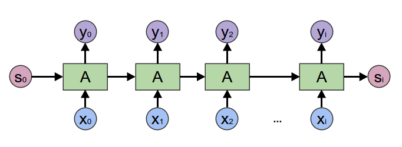Accumulating Map = RNNHaskell: mapAccumR a s -
Bidirectional Recursive Neural Networks are a more obscure variant, which I mention primarily for flavor. In functional programming terms, they are a left and a right accumulating map zipped together. They’re used to make predictions over a sequence with both past and future context.
 Zipped Left & Right Accumulating Map = Bidirectional RNNHaskell: zip (mapAccumR a s xs) (mapAccumL a` s` xs)
Zipped Left & Right Accumulating Map = Bidirectional RNNHaskell: zip (mapAccumR a s xs) (mapAccumL a` s` xs) -
Convolutional Neural Networks are a close relative of map. A normal map applies a function to every element. Convolutional neural networks also look at neighboring elements, applying a function to a small window around every element.3
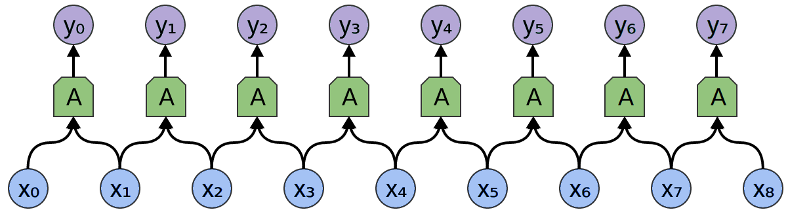Windowed Map = Convolutional LayerHaskell: zipWith a xs (tail xs)Two dimensional convolutional neural networks are particularly notable. They have been behind recent successes in computer vision. (More on conv nets.)
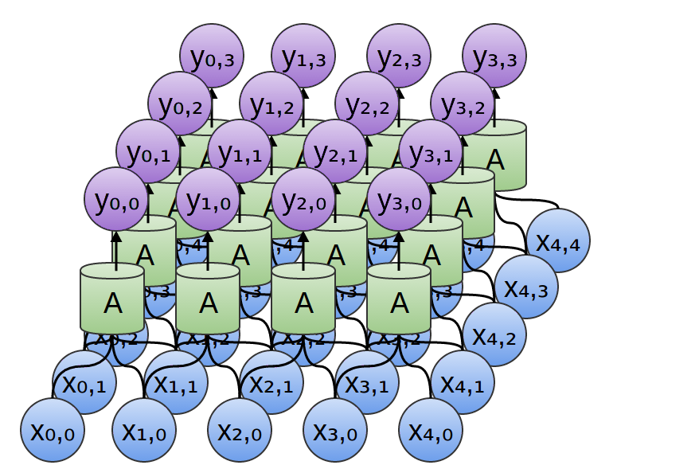Two Dimensional Convolutional Network -
Recursive Neural Networks (“TreeNets”) are catamorphisms, a generalization of folds. They consume a data structure from the bottom up. They’re mostly used for natural language processing, to allow neural networks to operate on parse trees.
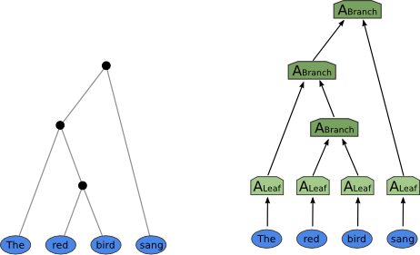Catamorphism = TreeNetHaskell: cata a -
Sutskever, et al. (2014) perform state of the art English to French translation by combining an encoding RNN and a generating RNN. In functional programming terms, they essentially fold over the (backwards) English sentence and then unfold to produce the French translation.
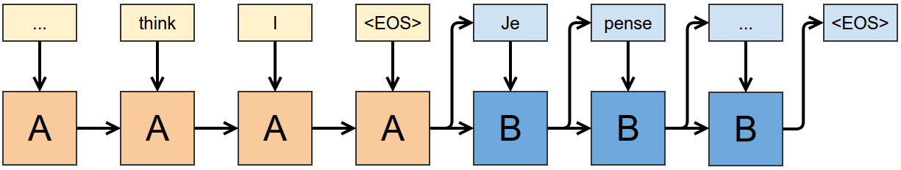 -
Vinyals, et al. (2014) generate image captions with a convolutional network and a generating RNN. Essentially, they consume the image with a convolutional network, and then unfold the resulting vector into a sentence describing it.
For example, the once ubiquitous sigmoid layer has been substantially replaced by ReLU layers.↩
I think it’s actually kind of surprising that these sort of models are possible at all, and it’s because of a surprising fact. Many higher order functions, given differentiable functions as arguments, produce a function which is differentiable almost everywhere. Further, given the derivatives of argument functions, you can simply use chain rule to calculate the derivative of the resulting function.↩
- This operation is also closely related to stencil/convolution functions, which are their linear version. They’re typically implemented using those. However, in modern neural net research, where “MLP convolution layers” are becoming more popular, it seems preferable to think of this as an arbitrary function. ↩
The above examples demonstrate how common patterns in neural networks correspond to very natural, simple functional programs.
A New Kind of Programming
These patterns are building blocks which can be combined together into larger networks. Like the building blocks, these combinations are functional programs, with chunks of neural network throughout. The functional program provides high level structure, while the chunks are flexible pieces that learn to perform the actual task within the framework provided by the functional program.
These combinations of building blocks can do really, really remarkable things. I’d like to look at a few examples.
These sorts of models can be seen as a kind of differentiable functional programming.
But it’s not just an abstract thing! They’re imbued with the flavor of functional programming, even if people don’t use that language. When I hear colleagues talk at a high level about their models, it has a very different feeling to it than people talking about more classical models. People talk about things in lots of different ways, of course – there’s lots of variance in how people see deep learning – but there’s often an undercurrent that feels very similar to functional programming conversations.
It feels like a new kind of programming altogether, a kind of differentiable functional programming. One writes a very rough functional program, with these flexible, learnable pieces, and defines the correct behavior of the program with lots of data. Then you apply gradient descent, or some other optimization algorithm. The result is a program capable of doing remarkable things that we have no idea how to create directly, like generating captions describing images.
It’s the natural intersection of functional programming and optimization, and I think it’s beautiful.
Conclusion
I find this idea really beautiful. At the same time, this is a pretty strange article and I feel a bit weird posting it. I’m very strongly presenting a speculative idea with little support behind it besides my own enthusiasm. Honestly, adopting the most objective perspective I can, I expect this idea is wrong, because most untested ideas are wrong. But it could be right, and I think it’s worth talking about.
Beyond that, I’m not really the right person to explore a lot of the directions this suggests – for example, one of the obvious things to do is to analyze neural networks from a homotopy type theory perspective, but I don’t have the relevant background. This is an idea that’s begging for broader discussion. It really seems like publishing this is the right thing to do.
Finally, I’m hoping this essay might stir up more discussion and thoughts about what deep learning is really about. I think there’s an important discussion waiting to be had.
Besides, what’s the point of writing a blog if I can’t speculate? Hopefully, I’ve been able to appropriately balance my excitement with my uncertainty.
Acknowledgments
Firstly, I’m incredibly grateful to Greg Corrado and Aaron Courville. They are the deep learning researchers I know who most strongly empathize with these ideas, and I’m really grateful for their intellectual support.
Several other people have had really extended and helpful conversations with me. Sebastian Zany spent several hours talking about type theory and neural networks with me. Michael Nielsen gave thorough feedback on a draft of this essay. Chas Leichner thought really deeply about these ideas, and was very encouraging. A big thank you to the three of them!
I’m also thankful for the comments of James Koppel, Luke Vilnis, Sam Bowman, Greg Brockman and Rob Gilson. Finally, I’ve spoken with a number of other people about these ideas in the last few months – thanks to all of them!
Appendix: Functional Names of Common Layers
| Deep Learning Name | Functional Name |
|---|---|
| Learned Vector | Constant |
| Embedding Layer | List Indexing |
| Encoding RNN | Fold |
| Generating RNN | Unfold |
| General RNN | Accumulating Map |
| Bidirectional RNN | Zipped Left/Right Accumulating Maps |
| Conv Layer | “Window Map” |
| TreeNet | Catamorphism |
| Inverse TreeNet | Anamorphism |
More Posts
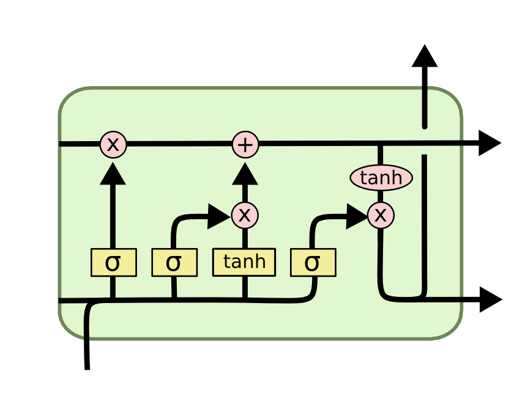
Understanding LSTM Networks

Neural Networks, Manifolds, and Topology
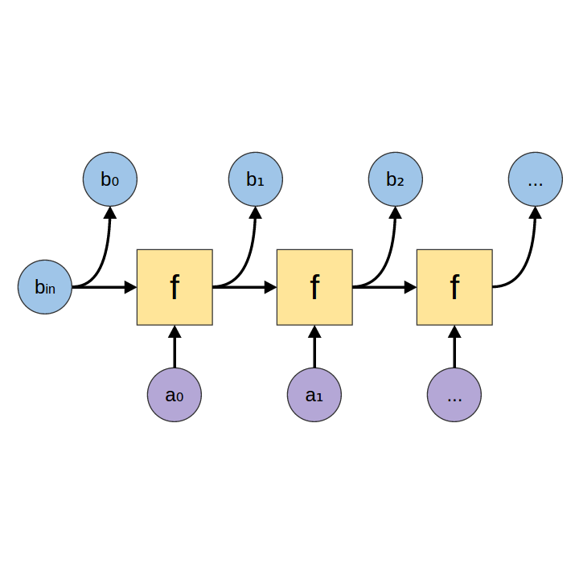